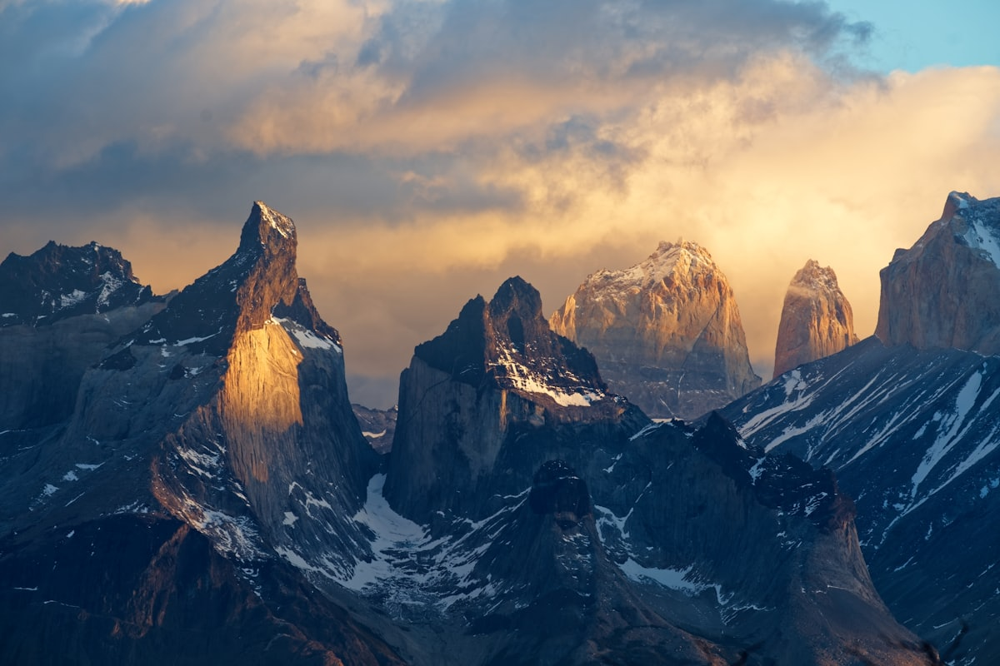
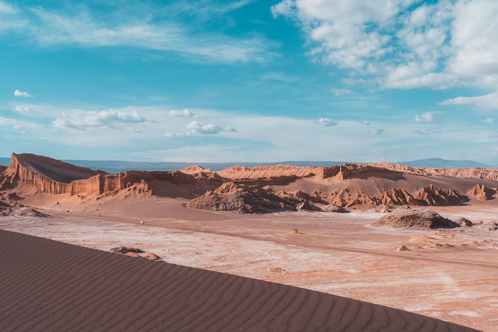
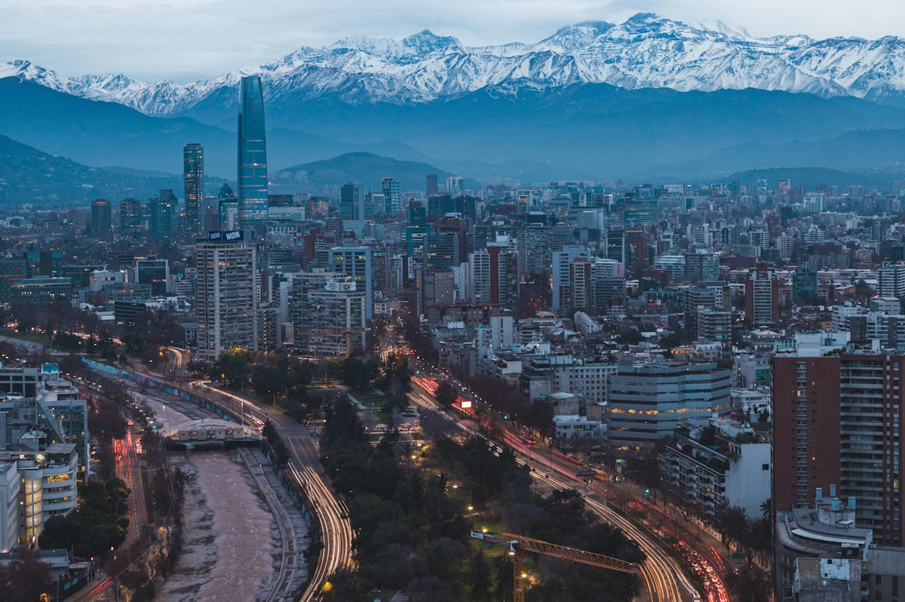
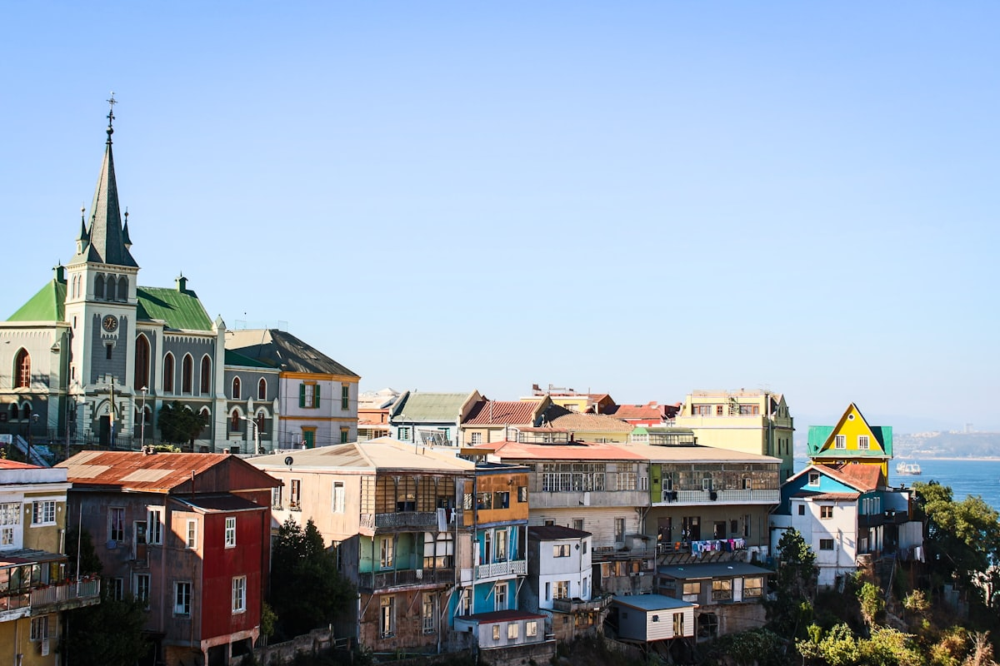
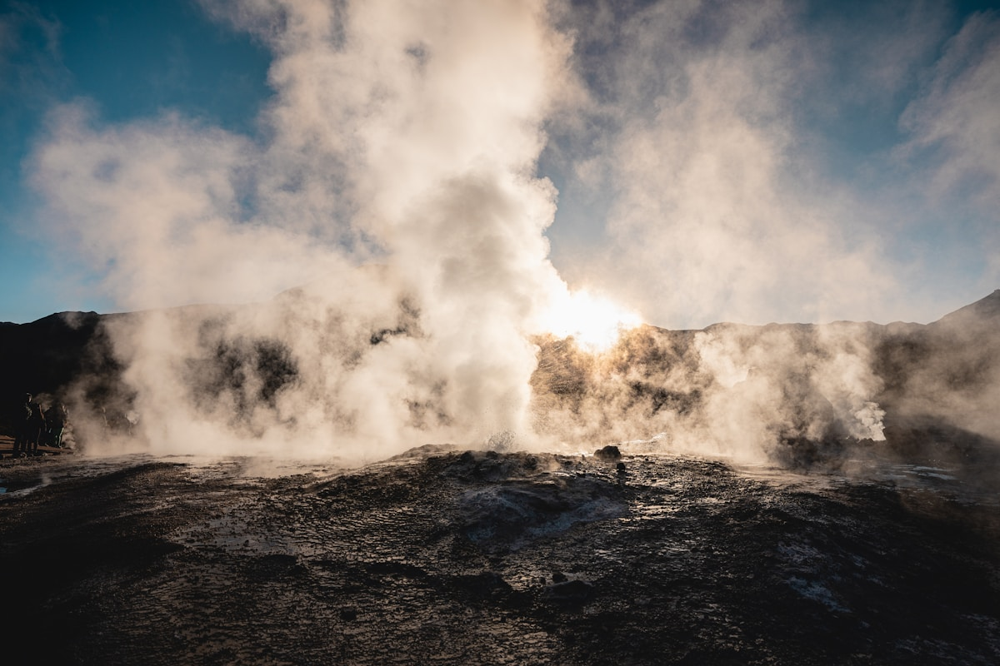
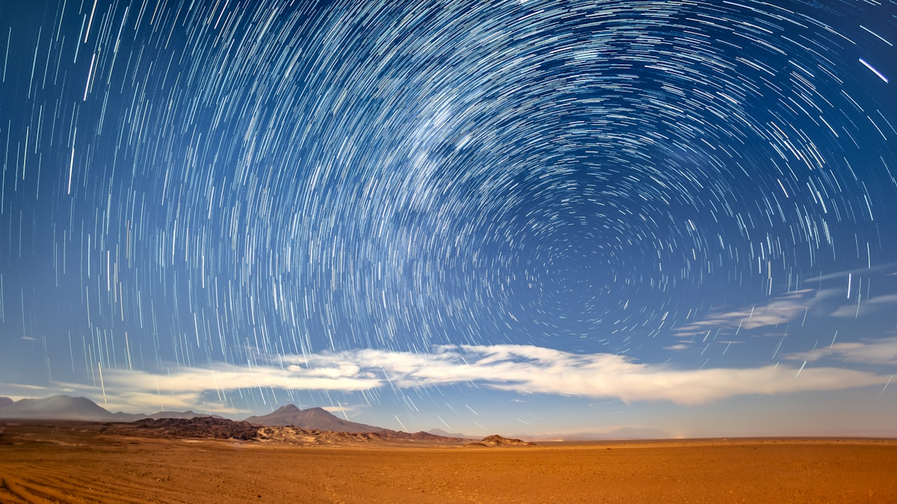
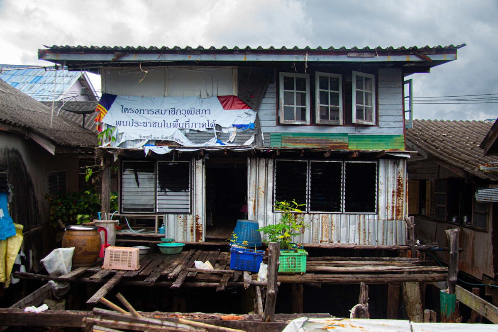
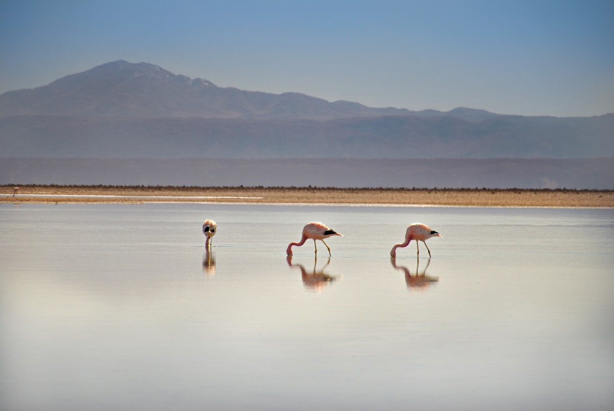

| 事项 | 结论 |
|---|---|
| 事项 | 结论 |
| 签证（最关键） | 持美签/加签（剩余有效期 6 个月以上，过境签除外）可免签入境 90 天；无美签须提前办智利旅游签，建议出发前 4–6 周办理 |
| 推荐方案 | 圣地亚哥 3 天 + 瓦尔帕莱索 1 天 + 阿塔卡马沙漠 4 天 + 蒙特港/奇洛埃 2 天 + 百内国家公园 3 天 |
| 返程约束 | 第 14 天经圣地亚哥转机返京，全程约 22h；国内 4 段飞机建议提前 1–2 个月订 |
| 行程链 | 圣地亚哥 → 瓦尔帕莱索 → 阿塔卡马 → 蒙特港 → 百内（国内段多为飞机） |
| 预算（人均） | 经济 18000–28000 ／ 标准 35000–50000 ／ 舒适 75000–110000（人民币） |
| 三件提前事 | ① 办美签或智利签 ② 线上抢百内门票（pasesparques.cl，旺季无现场票）③ 订国内 4 段飞机 |
| 季节提醒 | 10–4 月百内旺季（晴暖）；阿塔卡马全年少雨、观星最佳 3–10 月；注意南北半球季节相反 |
| 支付 | 智利比索 + 信用卡为主；圣佩德罗和百内多收现金，提前取好 |
以下为 14 天 13 晚的推荐节奏：圣地亚哥起、经瓦尔帕莱索，先飞北部阿塔卡马沙漠，再飞南部蒙特港/奇洛埃，最后深入百内国家公园，国内段以飞机为主（LATAM/Sky/JetSMART）。每日主景点 ≤2 个。
| 日期 | 行程 | 过夜地 | 主题 |
|---|---|---|---|
| D1 抵圣地亚哥 | 北京✈圣地亚哥（转机约 22h），入住贝亚维斯塔，武器广场散步+晚餐 | 圣地亚哥 | 抵达+倒时差 |
| D2 | 武器广场 → 中央市场（帝王蟹/海鲜）→ 圣卢西亚山 → 拉莫内达宫 | 圣地亚哥 | 老城日 |
| D3 | 圣克里斯托瓦尔山缆车（圣母像全景）→ 贝亚维斯塔 → 聂鲁达查斯寇纳故居 | 圣地亚哥 | 城景日 |
| D4 | 瓦尔帕莱索一日：康塞普西翁山+百年索道 → 聂鲁达塞巴斯蒂安娜 → 街头涂鸦 | 圣地亚哥 | 山城日 |
| D5 | 圣地亚哥✈卡拉马（2h）→ 接驳巴士到圣佩德罗·德阿塔卡马（2400m），基托尔堡垒日落 | 圣佩德罗 | 飞沙漠 |
| D6 | 塔蒂奥间歇泉日出（4320m，凌晨 4:30 出发）+ 普里塔马温泉；晚上观星团 | 圣佩德罗 | 间歇泉+观星 |
| D7 | 月亮谷（10000 比索，需线上预约）→ 死亡谷滑沙 → 月亮谷日落 | 圣佩德罗 | 月亮谷日 |
| D8 | 高原湖泊：米斯坎蒂湖/米尼克斯湖 → 查萨泻湖盐沼火烈鸟 | 圣佩德罗 | 盐沼日 |
| D9 | 圣佩德罗→卡拉马✈圣地亚哥转✈蒙特港，湖畔小城+海鲜市场 | 蒙特港 | 飞湖区 |
| D10 | 奇洛埃一日：巴士含轮渡到卡斯特罗 → 水上高脚屋+世界遗产木教堂 | 蒙特港 | 奇洛埃日 |
| D11 | 蒙特港✈蓬塔阿雷纳斯（3.5h）→ 巴士到纳塔莱斯港，线上买百内门票 | 纳塔莱斯港 | 飞巴塔哥尼亚 |
| D12 | 百内三塔观景台徒步（往返 8–10h）或裴欧埃湖+格雷冰川观景台 | 纳塔莱斯港 | 三塔日 |
| D13 | 格雷冰川游船（蓝冰）+ 裴欧埃湖 + 萨尔托格兰德瀑布 | 纳塔莱斯港 | 冰川日 |
| D14 返程 | 纳塔莱斯港→蓬塔阿雷纳斯✈圣地亚哥✈北京，到家 | — | 收尾 |
以下为 14 天全程的逐小时执行时间线，可当作「当天打开照着走」的清单。标注 ※ 的可选项视体力与天气取舍。
| 时间 | 事项 |
|---|---|
| 14:00–22:00（北京时间） | 北京✈圣地亚哥：无直飞，经欧洲/中东/北美中转，全程约 22h，推荐法航/土耳其/海航，南美段尽量衔接白天航班 |
| 当地 12:00–14:00 | 抵阿图罗·梅里诺机场（SCL，市中心西北 17km），机场大巴/网约车进城约 30–40 分钟 |
| 15:00–17:00 | 入住贝亚维斯塔（Bellavista）或武器广场附近酒店，便利店换少量比索（机场汇率略差） |
| 17:30–20:00 | 武器广场散步：大教堂+中央邮局，晚餐圣地亚哥帝王蟹或肉馅卷饼（empanada） |
| 20:00 | 回酒店休息，倒时差（北京-圣地亚哥时差 -11h） |
| 时间 | 事项 |
|---|---|
| 09:00–11:00 | 武器广场（Plaza de Armas）（免费）：圣地亚哥心脏，大教堂、中央邮局、骑警巡逻 |
| 11:00–12:30 | 中央市场（Mercado Central）（免费）：百年铸铁市场，海鲜摊密集，帝王蟹季（12–2 月）必吃 |
| 12:30–13:30 | 午餐：中央市场内海鲜料理，或附近肉馅卷饼店 |
| 14:00–15:30 | 圣卢西亚山（Cerro Santa Lucía）（免费）：1541 年建城起点，山顶城堡俯瞰老城 |
| 16:00–17:30 | 拉莫内达宫（总统府，外观免费）：宪法广场+骑警换岗（约 10:00/18:00） |
| 时间 | 事项 |
|---|---|
| 08:30–09:30 | 乘地铁到贝拉维斯塔/巴西站，步行到圣克里斯托瓦尔山缆车站 |
| 09:30–11:30 | 圣克里斯托瓦尔山（Cerro San Cristóbal）（缆车往返 <5000 比索）：880m 城市制高点，圣母像+安第斯雪山全景 |
| 11:30–13:00 | 下山逛贝亚维斯塔（Bellavista）：波西米亚街区、涂鸦墙，午餐在皮斯科酸酒酒吧 |
| 14:00–16:00 | 查斯寇纳故居（La Chascona）（成人约 7000 比索）：诗人聂鲁达三处故居之一，彩色小屋+秘密通道 |
| 16:30–18:00 | 可选：迈波谷/空加瓜谷酒庄半日（提前报团约 400–800 元），或自由购物 |
| 时间 | 事项 |
|---|---|
| 08:00–10:00 | 圣地亚哥 Turbus 站乘大巴到瓦尔帕莱索（约 2h，票价约 6000–9000 比索，班次密集） |
| 10:00–12:00 | 康塞普西翁山（Cerro Concepción）：百年索道（funicular）+石板阶梯+彩虹房屋 |
| 12:00–13:30 | 聂鲁达塞巴斯蒂安娜故居（La Sebastiana）（成人 7000 比索）：诗人俯瞰海港的书房 |
| 13:30–15:00 | 午餐：港区海鲜+肉馅卷饼，海边看货轮进出 |
| 15:00–17:00 | 街头涂鸦区（免费）：露天美术馆，邮票街（Pasaje Bavestrello） |
| 17:00–19:00 | 返回圣地亚哥（末班车约 20:00），晚餐智利烤牛肉 |
| 时间 | 事项 |
|---|---|
| 07:00–09:00 | 圣地亚哥✈卡拉马（CJC，约 2h，LATAM/Sky/JetSMART，单程约 300–600 元） |
| 09:30–11:30 | 卡拉马机场接驳巴士（约 9000–14000 比索）行驶 100km 到圣佩德罗·德阿塔卡马（2400m，1.5–2h） |
| 12:00–14:00 | 入住土坯小镇酒店，主街 Caracoles 报团+换汇 |
| 15:00–17:30 | 适应海拔：徒步/骑车到基托尔堡垒（Pukará de Quitor）（门票约 2660 比索）看日落 |
| 18:00–20:00 | 晚餐羊驼排，喝古柯茶，早睡 |
| 时间 | 事项 |
|---|---|
| 04:00–04:30 | 凌晨出发：塔蒂奥间歇泉团（海拔 4320m，行程约 37000–46000 比索+入园费约 14000 比索） |
| 06:00–08:30 | 日出间歇泉（El Tatio）：黎明 -10°C 低温下数十根蒸汽柱喷向 6 米高空，蒸汽孔烹制早餐 |
| 09:30–11:00 | 返程经普里塔马温泉（Puritama）（约 30000 比索）：沙漠中的天然温泉池 |
| 13:00–15:00 | 回到圣佩德罗，午休（高海拔很耗体力） |
| 20:00–23:00 | 观星之旅（约 32000–52000 比索）：激光笔星座讲解+望远镜，肉眼可见银河核心与麦哲伦星云 |
| 时间 | 事项 |
|---|---|
| 09:00–12:00 | 睡到自然醒，租自行车（约 9000 比索/天）或参加下午团 |
| 12:00–13:00 | 午餐：主街烤肉/馅饼 |
| 14:00–17:00 | 月亮谷（Valle de la Luna）（门票 10000 比索，需线上预约时段）：风蚀盐层+沙丘+大沙丘（Duna Mayor）观景台 |
| 17:00–18:30 | 顺路死亡谷（Valle de la Muerte）：100 米沙丘滑沙（团约 28000–36000 比索） |
| 18:30–19:30 | 月亮谷观景点看日落：白色盐层→红岩→粉紫天空（尽早占位） |
| 时间 | 事项 |
|---|---|
| 06:30–07:00 | 出发高原湖泊团（约 55000–74000 比索，含车与向导，湖泊入园费约 9000 比索另付） |
| 09:00–11:30 | 米斯坎蒂湖（Laguna Miscanti）与米尼克斯湖（Miñiques）（4000m）：火山倒影+高原草甸 |
| 11:30–12:30 | 途中托科瑙村（Toconao）：石钟楼与仙人掌 |
| 13:00–15:00 | 返回午餐，午休 |
| 15:30–18:00 | 查萨泻湖（Laguna Chaxa）（入园约 13000 比索）：阿塔卡马盐沼三种火烈鸟+火山背景日落 |
| 时间 | 事项 |
|---|---|
| 07:00–09:00 | 圣佩德罗→卡拉马机场（接驳巴士 1.5–2h） |
| 09:30–13:30 | 卡拉马✈圣地亚哥✈蒙特港（PMC，总转机约 4h） |
| 14:00–15:30 | 入住蒙特港，湖畔小城+海鲜市场（Mercado Angelmó） |
| 15:30–17:30 | 港口看日落；预订明日奇洛埃往返巴士 |
| 时间 | 事项 |
|---|---|
| 07:30–11:00 | 蒙特港长途站乘巴士到卡斯特罗（Castro）（3.5h 含渡轮，Cruz del Sur 约 6000–8000 比索，巴士直接上船不用换乘） |
| 11:00–13:00 | 水上高脚屋（Palafitos）（免费）：查考海峡 30 分钟渡轮+彩色棚屋 |
| 13:00–14:00 | 午餐：奇洛埃特色 curanto（海鲜+肉类大锅） |
| 14:00–16:00 | 圣弗朗西斯科教堂（世界遗产木教堂）+达尔卡韦（Dalcahue）手工艺集市 |
| 16:00–19:30 | 返蒙特港，晚餐湖鲜 |
| 时间 | 事项 |
|---|---|
| 07:00–09:00 | 蒙特港✈蓬塔阿雷纳斯（PUQ，约 3.5h，LATAM/Sky） |
| 09:30–12:30 | 蓬塔阿雷纳斯→纳塔莱斯港（Puerto Natales）巴士（约 3h，8000–12000 比索） |
| 13:00–15:00 | 入住纳塔莱斯港，小镇补货+换汇 |
| 15:00–17:00 | 线上购百内门票（pasesparques.cl，旺季 21000 比索/3天），确认明日巴士班次 |
| 18:00–20:00 | 晚餐：巴塔哥尼亚烤羊肉，早睡 |
| 时间 | 事项 |
|---|---|
| 06:00–07:00 | 纳塔莱斯港→公园入口接驳巴士（约 2h，单程 3000–5000 比索） |
| 07:30–12:00 | 三塔（Las Torres）观景台徒步：单程约 10km，穿越伦加森林+冰碛石爬升 |
| 12:00–13:00 | 路餐（自备三明治/能量棒） |
| 13:00–16:30 | 登顶或原路折返，看花岗岩三塔全景（最佳机位，日出 7:30 前后日照金山） |
| 17:00–19:00 | 出园返纳塔莱斯港，晚餐 |
| 时间 | 事项 |
|---|---|
| 08:00–10:00 | 再入百内（门票 3 天有效）：乘车到格雷湖（Lago Grey） |
| 10:00–12:30 | 格雷冰川游船（Navegación Glaciar Grey）（约 400–700 元/人）：近距离看蓝冰浮冰崩落 |
| 12:30–14:00 | 裴欧埃湖（Lago Pehoé）观景：宝石蓝湖水+湖心岛酒店经典机位 |
| 14:00–16:00 | 萨尔托格兰德瀑布短途徒步，偶遇安第斯秃鹫 |
| 16:00–18:00 | 返纳塔莱斯港，晚餐烤羊+智利红酒 |
| 时间 | 事项 |
|---|---|
| 07:00–10:00 | 纳塔莱斯港→蓬塔阿雷纳斯巴士（3h） |
| 11:30–16:00 | 蓬塔阿雷纳斯✈圣地亚哥（3.5h） |
| 17:00–次日 | 圣地亚哥✈北京（转机约 22h，南美段中转 1 次） |
必去（必去）/ 顺路（顺路）/ 可跳过（可跳过）。

必去
必去
必去
必去
顺路
顺路
顺路图片为 Unsplash 主题图（百内三塔、月亮谷、圣克里斯托瓦尔山、瓦尔帕莱索、塔蒂奥间歇泉、星空、奇洛埃高脚屋等均为智利实景），用于页面配图。更多免费看点：圣地亚哥武器广场、圣卢西亚山、中央市场，瓦尔帕莱索涂鸦街。
点击左侧节点可在地图上定位；点击地图 marker 会高亮对应节点。坐标为 WGS-84 转 GCJ-02 纠偏后标注。
以下为单人、不含购物的估算，人民币计价；出发地基准北京。汇率按 1 元人民币 ≈ 96 智利比索。往返机票按淡季 8000–13000 元计，境内 4 段国内航班（SCL-CJC、CJC-SCL、SCL-PMC、SCL-PUQ）合计约 1500–3000 元。
| 项目 | 经济（18000–28000） | 标准（35000–50000） | 舒适（75000–110000） |
|---|---|---|---|
| 往返机票 | 北京⇄圣地亚哥 8000–11000 | 转机更优/含联程 12000–16000 | 宽体舱+舒适转机 20000–30000 |
| 住宿（13 晚） | 青旅/民宿 200–350/晚 | 三至四星 450–800/晚 | 精品酒店/度假村 1500–3000/晚 |
| 境内交通 | 4 段廉航+巴士 2500–4000 | LATAM 正价+部分直飞 5000–7000 | 含包车/私人接驳 10000–16000 |
| 门票与活动 | 月亮谷+百内门票 1500–2500 | 含间歇泉/观星/格雷船 3500–5500 | 全部行程+私人向导 8000–12000 |
| 餐饮（14 天） | 市场+快餐 2000–3000 | 正常下馆子 4000–6000 | 海景餐厅/米其林级 10000–18000 |
百内延长为 5 天走 W 线（三塔—法国谷—格雷冰川），阿塔卡马缩为 2 天（月亮谷+间歇泉），砍掉蒙特港/奇洛埃。W 线营地需提前半年预订，旺季为 11–3 月；全程自背露营约 800–1500 美元/人，走轻装山屋约 1500–2500 美元。
百内淡季门票 11000 比索且人少，但严寒多风，三塔线 2026/4/27–8/30 强制授权向导；阿塔卡马冬季天空最清澈、观星最佳，但黎明前行程极冷（-10°C）。智利国内机票和住宿整体便宜 20–30%。
| 方式 | 时长 | 参考价 | 备注 |
|---|---|---|---|
| 国际航班 | 北京→圣地亚哥 转机约 22–25h | 往返 8000–13000 元 | 无直飞，经欧洲/中东/北美中转，法航/土耳其/海航 |
| 国内航班 | 圣地亚哥→卡拉马 2h；→蒙特港 1h45；→蓬塔阿雷纳斯 3h30 | 单程 300–800 元 | LATAM/Sky/JetSMART，提前 1–2 个月订 |
| 长途巴士 | 圣地亚哥—瓦尔帕莱索 2h | 单程 6000–9000 比索 | Turbus/Condor，班次密集 |
| 渡轮 | 蒙特港—纳塔莱斯港 4 天 3 夜（Navimag） | 含舱位 700–1400 美元 | 世界最美渡轮航线之一，需提前订 |
| 区域 | 价格/晚 | 优点 | 短板 |
|---|---|---|---|
| 圣地亚哥·贝亚维斯塔/武器广场 | 经济 200–350 / 标准 400–800 | 老城核心，景点步行可达 | 晚高峰地铁人多 |
| 瓦尔帕莱索·康塞普西翁山 | 经济 200–400 / 标准 400–900 | 彩色山城+海景 | 坡多，行李搬运累 |
| 圣佩德罗·德阿塔卡马 | 经济 250–500 / 标准 600–1200 | 沙漠小镇，报团方便 | 旺季一房难求，提前 2–3 个月 |
| 蒙特港/卡斯特罗 | 经济 200–400 / 标准 400–800 | 湖海双景，奇洛埃出发地 | 旅游设施一般 |
| 纳塔莱斯港 | 经济 250–500 / 标准 500–1000 | 百内门户，旅行社集中 | 旺季房价翻倍 |
| 百内园内 | 营地/山屋 150–600 / 酒店 1500–4000 | 看日出三塔，沉浸自然 | 须提前数月预订 |